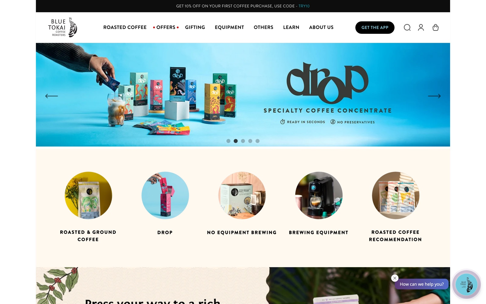

Blue Tokai — Redesign
A specialty roastery deserves a storefront that feels like the coffee — considered, warm, single-origin. This concept trades a busy marketplace grid for an editorial experience built around the roast itself.
The problem
The current site sells great coffee through a busy, template-heavy layout — carousels, discount codes, and category circles competing for attention. The craft of single-origin roasting gets flattened into a generic e-commerce grid.

 Open the live redesign
Open the live redesign
The process
Study
Looked at how the craft of single-origin roasting gets flattened into a generic marketplace grid.
Reframe
Led with a point of view — provenance, roast level and tasting notes — instead of a discount carousel.
Design
An editorial hero, a 'roast of the week' story card, and a curated weekly selection with clear roast meters.
Retain
A subscription band turns first-time buyers into a recurring habit with three simple cadences.
What changed
An editorial hero leads with a point of view, not a promo. A "Roast of the week" card puts the product's story — estate, altitude, tasting notes, roast level — where the add-to-bag button is, so browsing becomes tasting.
Roasts are presented as a curated weekly selection with clear roast-level meters; a subscription band turns first-time buyers into a recurring habit with three simple cadences.
The idea
Premium isn't more elements — it's fewer, better ones. By giving each roast room to breathe and leading with provenance, the store starts to feel like the specialty product it's selling.
Same catalogue, same commerce — a completely different sense of worth.
Note
This is a self-initiated concept and is not affiliated with or endorsed by Blue Tokai. The "before" is their live site, shown for comparison; the "after" is my own illustrative design.